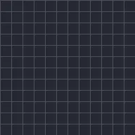

Tekenvoortgang

Tekent een vrije tekening lijn voor lijn, of de omtrek van een vorm, van Begin tot Einde. Zet keyframes op Einde van 0% tot 100% om de tekening te zien ontstaan. Werkt het best bij vormen met Vulling uit en een lijn.
Instellingen
| Instelling | Type | Bereik | Standaard |
|---|---|---|---|
| Begin | Getal | 0% tot 100% | 0% |
| Einde | Getal | 0% tot 100% | 100% |